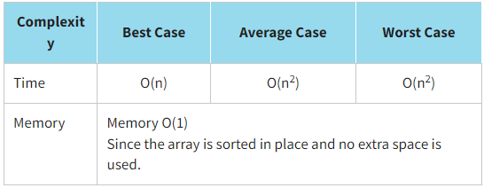
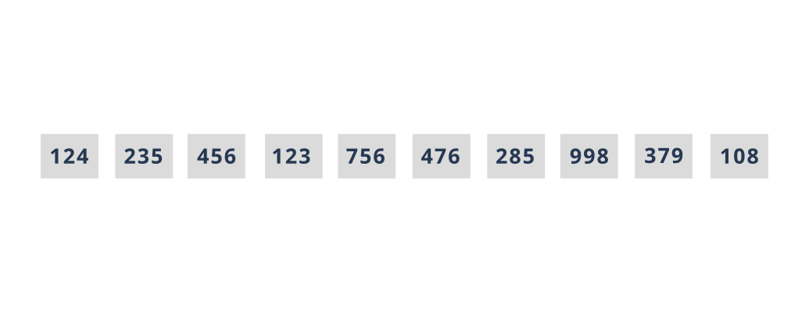

Insertion Sorting
Insertion sort iterates through an array and moves the desired value to the beginning of the array. After the next position has been processed, we know that all positions preceding it are sorted, but not the positions following it. This sort is "stable" since identical elements will not change their order.
Let us sort our array of library cards using the insertion sort. Recall that the values of library cards are {124,235,456,123,756,476,285,998,379,108}.
Look at the program implementation of the insertion sort.
JavaScript realisation
function insertionSort(arr) {
let count = 0;
for (let i = 1; i < arr.length; i++) {
const keyItem = arr[i];
let j = i - 1;
while (j >= 0 && keyItem < arr[j]) {
const temp = arr[j + 1];
arr[j + 1] = arr[j];
arr[j] = temp;
count += 1;
j--;
}
}
return count;
}
const initData = [124, 235, 456, 123, 756, 476, 285, 998, 379, 108];
console.log(`Initial array:`, initData);
const iterationsTestData = insertionSort(initData);
console.log(`The number of permutations is: ${iterationsTestData}`, `\nSorted array:`, initData);
The result:
Initial array: [ 124, 235, 456, 123, 756, 476, 285, 998, 379, 108 ]
The number of permutations is: 20
Sorted array: [ 108, 123, 124, 235, 285, 379, 456, 476, 756, 998 ]
You should choose the insertion sort when:
- an array is partially sorted as the insertion sort is adaptive
- an array to be sorted is relatively small
- a simple sorting implementation is desired
- there are limits on memory usage
Click here or here to see a more detailed explanation of the insertion sort.
Click here to watch Insertion Sort vs. Bubble Sort + Some analysis.